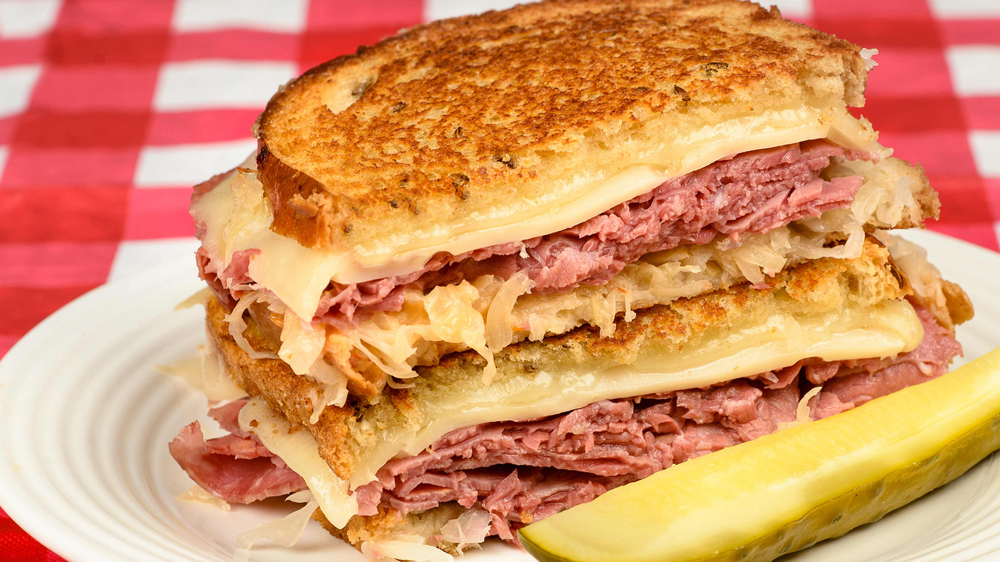

Home
Reube Sandwich

A Reuben sandwich is one of my family's fix-it-quick favorites.
They are really delicious and easy to make.
I like to serve them with big bowls of steaming vegetable soup and dill pickles on the side.
Ingredients
- 8 slices rye bread
- ½ cup Thousand Island dressing
- 8 slices Swiss cheese
- 8 slices deli sliced corned beef
- 1 cup sauerkraut, drained
- 2 tablespoons butter, softened
Steps
- Preheat a large griddle or skillet over medium heat.
- Spread one side of bread slices evenly with Thousand Island dressing.
- On four bread slices, layer one slice Swiss cheese, 2 slices corned beef, 1/4 cup sauerkraut
and a second slice of Swiss cheese.
- Top with remaining bread slices, dressing-side down. Butter the top of each sandwich.
- Place sandwiches, butter-side down on the preheated griddle; butter the top of each sandwich with remaining butter
- Grill until both sides are golden brown, about 5 minutes per side. Serve hot.